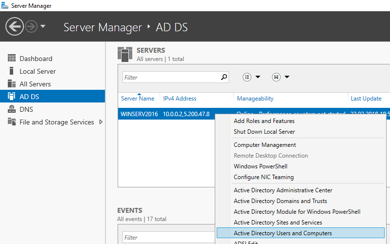
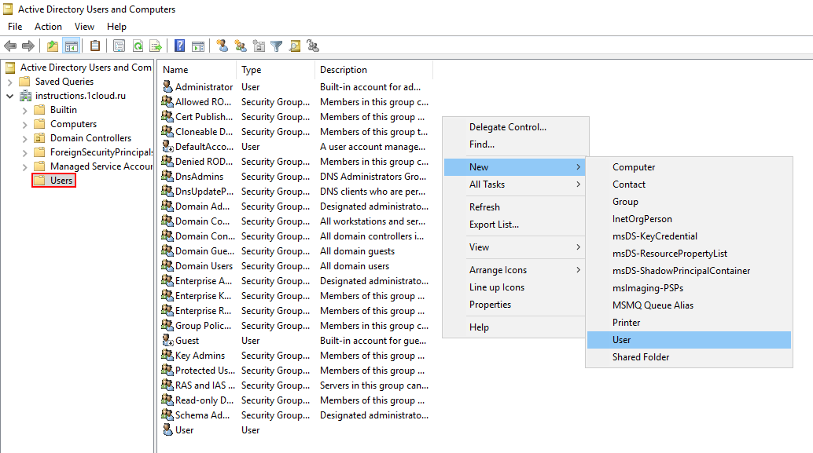
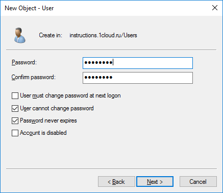
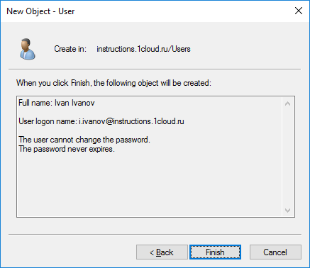
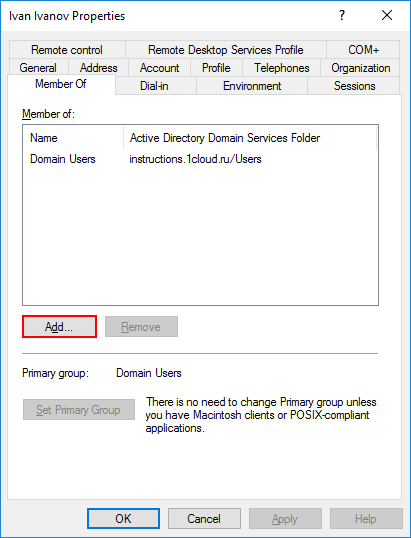
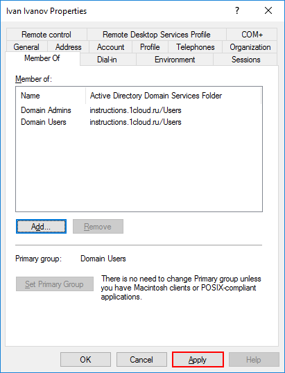

Администрирование сетевых ОС. Служба каталогов
Создание учетных записей
4/10Для создания новых учетных записей и администраторов откройте оснастку Active Directory Users and Computers, для этого откройте Диспетчер серверов и перейдите в раздел AD DS. В контекстном меню сервера выберете соответствующую оснастку.
В новом окне разверните дерево вашего домена и найдите каталог с пользователями Users. Правой кнопкой мыши нажмите на каталог и выберете Создать -> Пользователь.
Для нового пользователя задайте личные данные и имя входа.

Далее введите пароль, который должен быть достаточно сложным и содержать буквы разного регистра и цифры. Дополнительные опции выберите на свое усмотрение.
Создайте нового пользователя.
Чтобы пользователь мог управлять службами Active Directory, его необходимо добавить в группу Domain Admins. Для этого с помощью правой кнопки мыши откройте свойства пользователя и перейдите во вкладку Member Of. Нажмите кнопку Add для добавления в группу.
Выполните поиск группы Domain Admins с помощью кнопки Check Names. Нажмите OK.

Сохраните изменения кнопкой Apply.
Теперь созданный пользователь сможет подключиться к контроллеру домена.
Рекомендуется сразу убедиться, что для публичного сетевого адаптера включен Firewall, а для доменной/частной сетей - отключен.